● 台北桃園T2 → 香港T1：06/16（二） 18:10 出發 → 19:55 抵達（1h45m）
● 香港T1 → 蘇黎世：06/16（二） 23:05 出發 → 06/17（三） 06:10 抵達（13h5m）
📌 蘇黎世時差：台灣 −6小時（6月 CEST = UTC+2）
💡 抵達後搭 07:46 首班快車 至策馬特（Visp 轉車，約 11:20 抵達）
● 蘇黎世 → 香港：06/25（四） 22:30 出發 → 06/26（五） 16:35 抵香港（12h5m）
● 香港T1 → 台北桃園T2：06/26（五） 19:40 出發 → 21:30 抵台（1h50m）
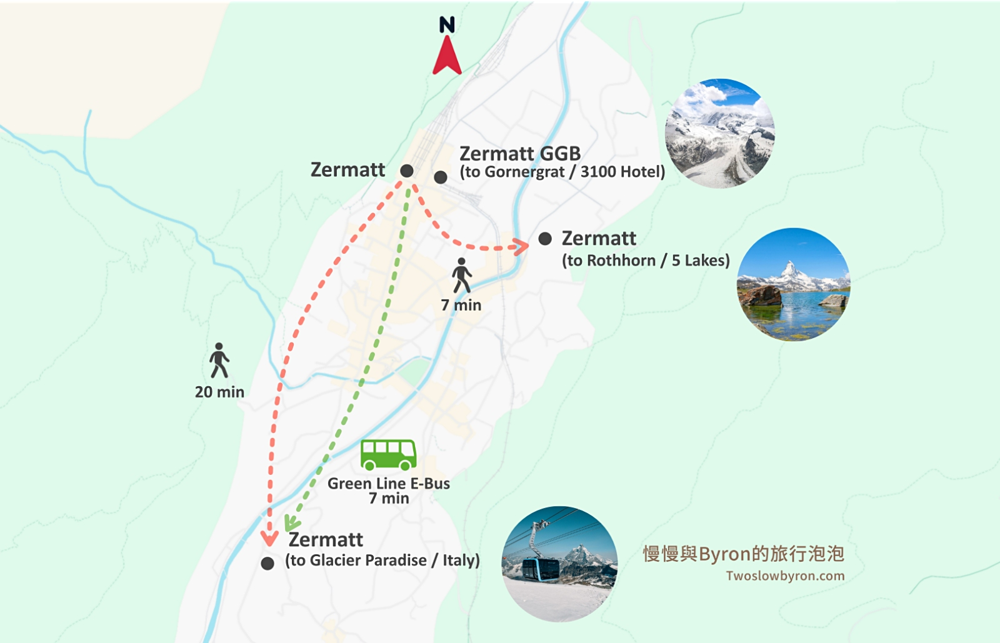
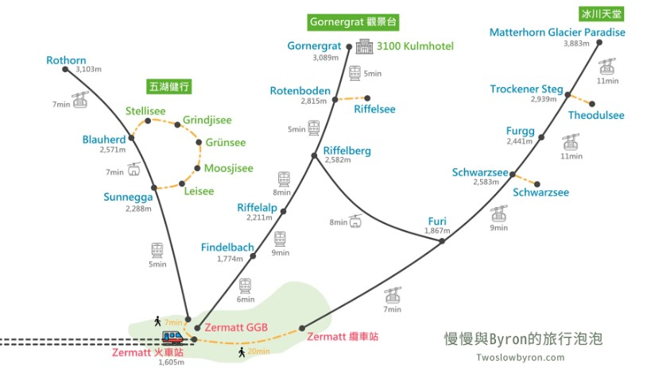
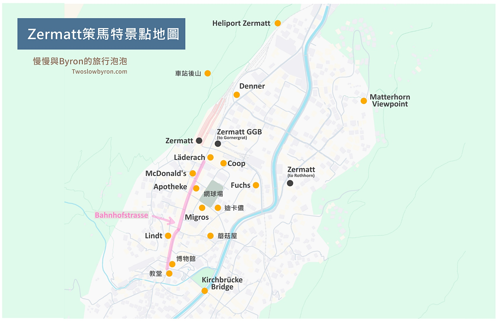
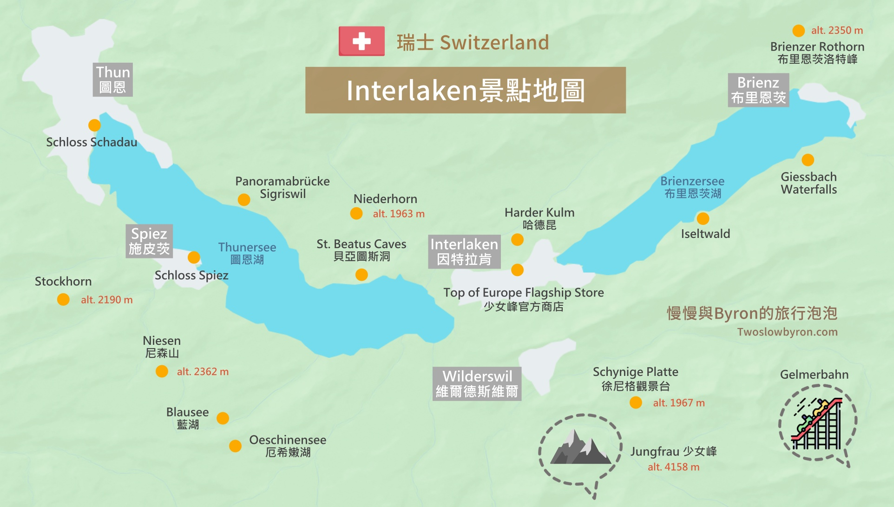
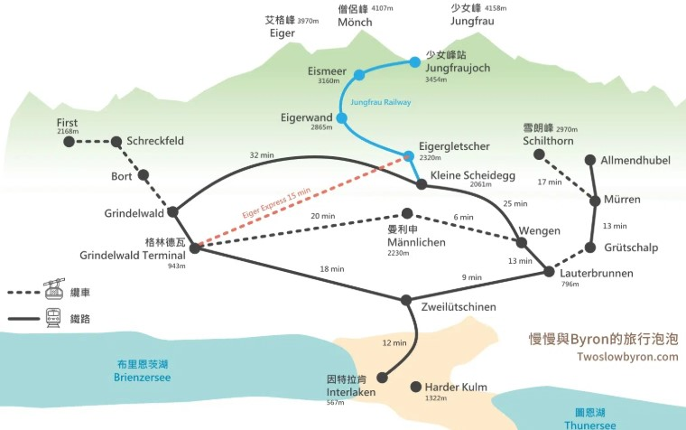
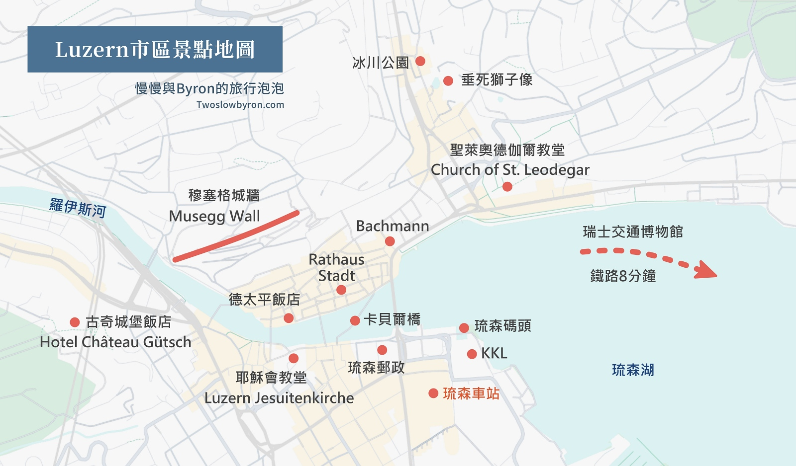
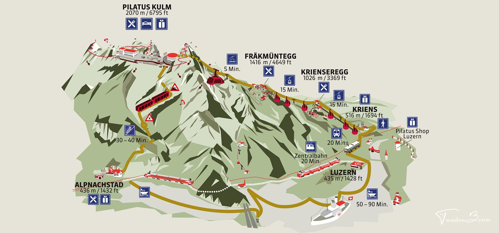
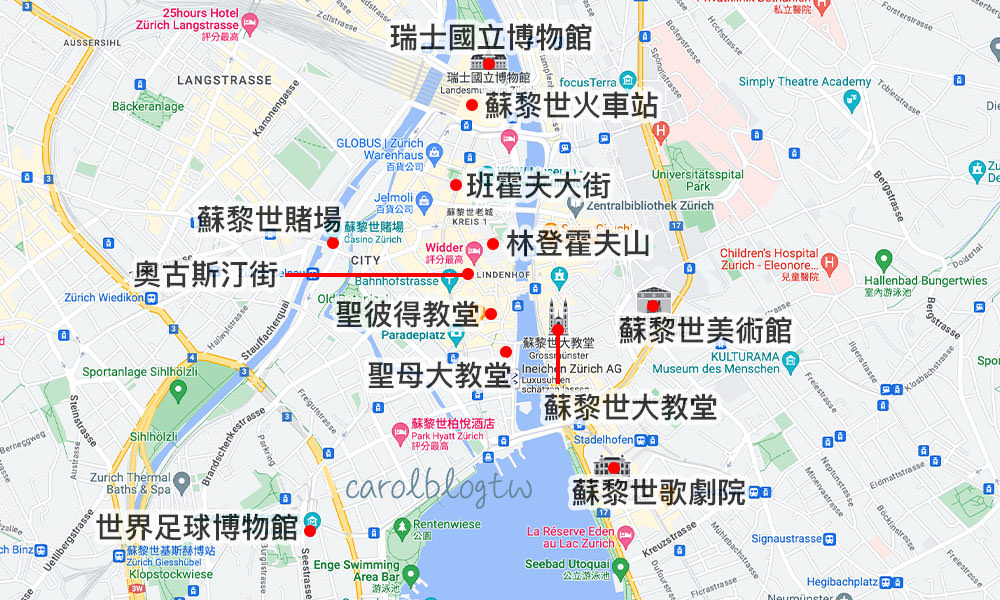
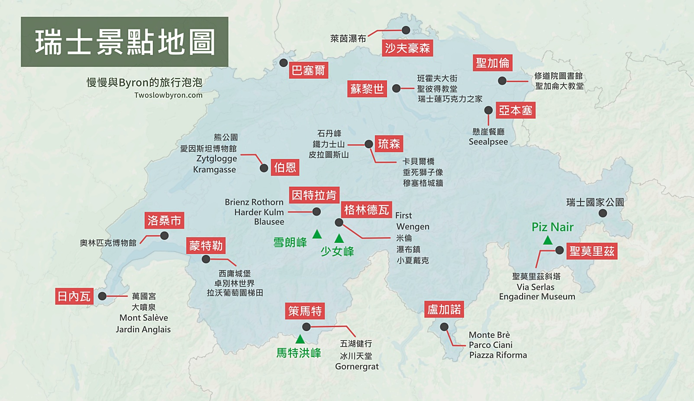
| 景點 | 交通方式 | 官網 | 夏季首/末班（參考） |
|---|---|---|---|
| 🔵 五湖健行 Sunnegga / Blauherd | 地下纜索鐵路（隧道）+ 8人座纜車 | 即時狀態 | 首班 08:00，末班下山約 18:00 |
| 🔴 Gornergrat 齒軌登山火車 | Zermatt GGB（火車站正對面） | 時刻表 | 首班 07:00，每24分一班，末班下山約 19:24 |
| 🟡 冰川天堂 Matterhorn Express | 三段纜車（谷站→Furi→Trockener Steg→頂） | 即時狀態 | 首班 08:30，⚠️ 末班下山約16:30–17:00，旺季18:30，當天確認！ |
| 🏔️ Grindelwald First Firstbahn 纜車 | Interlaken Ost → BOB火車30分 → 步行10分 → 纜車25分 | 時刻表 | 夏季約 08:30–17:30；First Flyer 11:00–15:30 |
| ⭐ 少女峰 Jungfraujoch | Interlaken Ost→Grindelwald→Eiger Express→Eigergletscher→Jungfraubahn | 時刻表&票價 | 首班約 07:35 從 Interlaken Ost；5–10月座位預訂強制 CHF 10 |
| 🔵 哈德昆 Harder Kulm | Interlaken Ost 步行7分→Harderbahn 纜車站（10分登頂） | 官網 | 2026/4/3–11/29運行；半價卡 CHF 22 |
| 🚢 布里恩茨湖遊船 | Interlaken Ost 碼頭出發，終點 Brienz | BLS 時刻表 | STP 免費；半價約 CHF 20；全程約75分鐘 |
| 🐉 皮拉圖斯山 金色環遊（順時針） | 琉森碼頭汽船→Alpnachstad→齒軌→頂→纜車→Kriens→公車 | 時刻表&票價 | 汽船首班 08:35；齒軌末班上山約17:00；⚠️ 14:30前下山 |
a. 當地免費電動巴士 (e-Bus)
• 雙線免費接駁：策馬特主要由綠線 (Linie Green)與紅線 (Linie Red)電動巴士交織。綠線主要連接火車站與 Matterhorn Express (冰川天堂纜車站)；紅線則穿梭於鎮內主要住宅與舊城區。
• 雨天完美串聯：不需在大雨中步行，直接從飯店出發搭乘巴士，可無縫移動至 **Coop 超市**、**策馬特博物館 (Zermatlantis)**，或到全鎮知名黑面羊餐廳聖地補給，完全不淋雨。
• 一鍵查即時班次：巴士上有動態看板，建議搭配 SBB App 即時查詢各巴士站牌班次。
• Dcard 網友實戰遊記
b. 洛伊克巴德溫泉 (Leukerbad Therme) — 車程約 2 小時
• 交通方式：從 Zermatt 搭乘火車至 Visp 轉車，搭到 Leuk 火車站下車，再轉乘 471 號巴士直達山谷溫泉小鎮 Leukerbad, Therme。體驗阿爾卑斯山系最大的室內外溫泉水療療癒，非常適合惡劣天氣。
• 洛伊克巴德溫泉參考遊記
c. 西庸古堡 (Château de Chillon) — 車程約 3 小時
• 交通方式：從 Zermatt 搭乘火車至 Visp，換乘快車直達雷夢湖畔的 Montreux（蒙特勒）。到站後可步行、搭乘 201 號公車或轉搭區間火車至 "Veytaux-Chillon" 站。全室內古堡迷宮與地牢，完全不受雨天影響。
• 西庸古堡門票購買連結
d. 洛桑奧林匹克博物館 (The Olympic Museum Lausanne) — 車程約 3 小時
• 交通方式：從 Zermatt 搭火車至 Visp，轉乘國鐵直達 Lausanne（洛桑中央車站）。抵達後在火車站換乘地鐵 M2 線至 "Ouchy-Olympique" 終點站，步行 5 分鐘即達湖畔的互動式室內博物館。
• 奧林匹克博物館門票購買連結
a. 造訪低海拔世界遺產「伯恩老城」
• 當少女峰或 Grindelwald 山區大雨、白茫茫一片時，直接下山前往瑞士首都 伯恩 (Bern) 是最佳策略，低海拔氣候通常較穩定。
• 交通方式：從 Interlaken Ost（或 West）搭乘 IC 61 / IC 611 快線 火車，車程僅需 50 分鐘 直達 Bern 主火車站（每小時皆有班次）。
• 雨天行程安排：
1. 總長 6 公里的世界遺產拱廊 (Lauben)：伯恩老城區擁有歐洲最長的購物長廊，上方全有遮雨棚，雨天逛街吃火鍋完全免撐傘。
2. 伯恩鐘樓 (Zytglogge)：每小時前 4 分鐘有精采的木偶報時。
3. 熊公園 (Bärengraben) 與 伯恩大教堂：順道欣賞阿勒河環繞的絕美古城風情。
a. 瑞士交通博物館 (Verkehrshaus der Schweiz)
• 交通方式：在琉森火車站（Luzern Bahnhof）搭乘 S3 或 IR75 火車，僅需 8 分鐘至 "Luzern Verkehrshaus" 站下車即達；或在火車站前碼頭搭乘路面電車/公車 6、8、24 號至 "Verkehrshaus" 站。
• 交通博物館門票購買連結
b. 冰川公園 (Gletschergarten / Glacier Garden)
• 交通方式：由琉森火車站搭乘 1、19、22、23 號公車至 "Wesemlinrain" 站下車，步行 1 分鐘即達（緊鄰知名景點垂死獅子像），在室內探索冰河時期遺跡與鏡子迷宮。
• 冰川公園門票購買連結
c. 遊琉森湖 (Lake Lucerne Cruise)
• 交通方式：琉森火車站正對面即是琉森碼頭（Luzern Bahnhofquai）。持 Swiss Half Fare Card 或 Travel Pass 直接至碼頭乘船，即使下雨亦可坐在舒適設有暖氣的室內一等/二等艙觀景窗前，靜謐欣賞迷霧中的波光與山色。
a. 列支敦斯登一日遊 (Liechtenstein / Vaduz) — 車程約 1.5 小時
• 交通方式：從蘇黎世中央車站（Zürich HB）搭乘火車 IC 或 IR 直達 Sargans（約 55 分鐘），在車站廣場直接轉乘 11 號公車（郵政巴士）直達列支敦斯登首都 Vaduz, Post（約 30 分鐘）。可參觀市中心眾多室內美術館與郵票博物館。
b. Landquart Fashion Outlet 購物中心 — 車程約 1.5 小時
• 交通方式：由蘇黎世中央車站（Zürich HB）搭乘 IC 或 RE 列車直達 Landquart 火車站（約 65-75 分鐘），出站即是精品奧特萊斯購物村入口。多數店家走廊設有遮雨設計，雨天血拼採買瑞士與國際品牌服飾的最佳去處。
c. FIFA 世界足球博物館
• Scott 旅遊札記：FIFA 世界足球博物館深度開箱遊記
• 交通方式：從 Zürich HB (蘇黎世中央車站) 搭乘 5 號或 6 號路面電車 (Tram)，至 Zürich Enge 站 下車，車程僅 5 分鐘，出站步行 1 分鐘即達。
• 雨天亮點摘要：
1. 大力神盃真跡：全館展示歷屆世界盃珍貴文物、各國球衣彩虹牆，足球迷必看。
2. 巨型互動遊樂區：館內設有等身大的足球彈珠台、盤球與射門互動挑戰區，大人小孩都能玩得非常過癮，是完美的消耗時間兼避雨聖地。
| 出發 | 抵達 | 路線說明 | 時間 | 備註 |
|---|---|---|---|---|
| 07:46 ZH機場 | 11:20 Zermatt | ZH機場→Visp（IC）→Zermatt（MGB） | ~3h34m | Visp轉 Matterhorn Gotthard Bahn，約等8分。建議搭此班，D1行程從11:20開始。 |
| 09:46 | 13:20 | 同路線，下一班 | ~3h34m | 若機場辦理較慢（領行李、過海關超過1小時）可搭此班 |
| 路段 | 首班 | 末班（下行） | 間隔 | 備註 |
|---|---|---|---|---|
| Zermatt → Sunnegga（地下纜索鐵路） | 08:00（夏季） | ~18:00 | 連續發車 | 全程4.5分，爬升800m。D2目標 08:00–08:15 出發。 |
| Sunnegga → Blauherd（8人座纜車） | 08:30（配合首班） | ~18:00 | 連續 | Blauherd（2,571m）為五湖健行起點 |
| Sunnegga → Zermatt（健行結束下山） | — | 約18:00 | 連續 | 健行完回 Sunnegga 搭纜索鐵路下山，12:30前可抵谷底 |
| 路段 | 出發時間 | 抵達 | 備註 |
|---|---|---|---|
| Zermatt GGB → Gornergrat（齒軌，首班） | 07:00 | 07:35 | 每24分一班；坐右邊看馬特洪峰。全票 CHF 132，半價 CHF 66 |
| Gornergrat → Rotenboden（一站下車） | 約08:15（看完後搭下行） | 08:20 | Riffelsee 步行5–10分 |
| Rotenboden → Riffelberg（健行下坡） | 08:40出發步行 | 約09:30 | 約50分下坡步道；Riffelberg 午餐或自備 |
| Riffelberg → Zermatt（Gornergrat Bahn下山） | 約11:00–11:12 | 約11:30 | ⚠️ Riffelberg Express（Riffelberg↔Furi）2026/6/19尚未開放（開放日6/27），須搭齒軌火車回谷底 |
| Zermatt 谷站 → Furi → Trockener Steg → Klein Matterhorn（冰川天堂） | 谷站約11:30–11:45出發 | 約12:45–13:00頂 | 三段纜車；Trockener Steg停10分適應高度。半價 CHF 92（6月） |
| Klein Matterhorn → Zermatt（下山出發） | ⚠️ 14:00前開始下山 | 約15:15 | 末班下行約16:30–17:00（旺季18:30），當天在谷站確認！可於 Schwarzsee 短停 |
| 出發 | 抵達 | 路線 | 時間 | 備註 |
|---|---|---|---|---|
| 09:00 Zermatt | 11:15 Interlaken Ost | Zermatt → Visp → Spiez → Interlaken Ost | ~2h15m | 方案A（主要）：正常退房後搭乘 |
| 10:00 | 12:15 | 同路線 | ~2h15m | 若早上行程稍有延誤 |
| 13:00 | 15:15 | 同路線 | ~2h15m | 方案B備案：若D3未執行冰川天堂，D4早上補上（08:30上山→11:30下山→12:00取行李→13:00搭車） |
| 路段 | 出發 | 抵達 | 時間 | 備註 |
|---|---|---|---|---|
| Interlaken Ost → Grindelwald（BOB火車） | 07:35（早安票最早班） 08:03（一般） | 08:07 08:35 | 32分 | 早安票須搭07:35或07:04更早班從Ost出發；一般票08:03班即可 |
| Grindelwald Terminal → Eigergletscher（Eiger Express纜車） | 配合上班（約8:15/8:45） | +15分 | 15分 | Eigergletscher(2,320m)下車，適應高度10分＋洗手間 |
| Eigergletscher → Jungfraujoch（Jungfrau Railway） | 配合上班 | +26分 | 26分 | ⚠️ 5–10月座位預訂強制 CHF 10，jungfrau.ch 提前訂 |
| Jungfraujoch 山頂停留 | 約09:30–11:30 | — | ~2h | Sphinx觀景台＋Ice Palace＋Plateau廣場＋自備泡麵午餐 |
| Jungfraujoch → Kleine Scheidegg（下山） | 約11:30–12:00彈性 | +26分 | 26分 | 早安票須13:17前離開Jungfraujoch |
| 方案B（推薦）：Kleine Scheidegg → Wengernalp健行 → Lauterbrunnen | 步行約12:30出發 | Lauterbrunnen約14:30 | 健行40分+搭車30分 | 步道下坡輕鬆，艾格北壁全景；Lauterbrunnen瀑布鎮順遊（Trümmelbach CHF 16） |
| Lauterbrunnen → Interlaken Ost | 約16:00–16:30彈性 | +20分 | 20分 | 直達，每20–30分一班 |
| 方案A（輕鬆）：Kleine Scheidegg → Interlaken Ost直接回 | 約12:08–13:08彈性 | 約13:35–15:05 | ~1h27m | 經Grindelwald Terminal或Wengen，體力不足時選此 |
| 路段 | 出發 | 抵達 | 時間 | 備註 |
|---|---|---|---|---|
| Interlaken Ost 碼頭 → Brienz（遊船） | 09:00（約整點出發，確認BLS時刻） | 約10:30 | ~75分 | STP免費；半價卡約 CHF 20；靠右坐 |
| Brienz → Interlaken Ost（火車） | 約11:15 | 11:45 | ~30分 | 比遊船快，可彈性選班次 |
| Ost步行7分 → Harderbahn纜車站 → Harder Kulm（纜車） | 約11:50 | 約12:00 | 10分 | 票價：半價卡 CHF 22；少女峰通行證免費；山頂午餐CHF 25–35 |
| Harder Kulm → 纜車站 → Interlaken Ost | 約13:30下山 | 13:50 | — | 纜車站旁迷你動物園（山羊/土撥鼠，免費） |
| Ost搭21號公車 → Beatushöhlen站 | 約14:00 | 14:20 | ~20分 | 聖貝亞圖斯洞穴入口，CHF 26，遊覽約1–1.5h |
| 洞穴旁碼頭 → Interlaken West（圖恩湖遊船） | 約16:30彈性 | 約17:00 | ~30分 | STP免費；夕陽光線，結束「兩湖一洞」路線 |
| 路段 | 出發 | 抵達 | 時間 | 備註 |
|---|---|---|---|---|
| 退房 + 行李寄存（Interlaken Ost站） | 08:00 | — | — | CHF 6–9/件 |
| Interlaken Ost → Grindelwald（BOB火車） | 08:30 | 09:00 | ~30分 | STP免費；半價卡50%折 |
| Grindelwald → Firstbahn纜車站（步行） | 09:00出站 | 09:10 | 10分 | — |
| Firstbahn纜車 → Grindelwald First（2,168m） | 09:10（務必早到！） | 09:35 | 25分 | 票價：半價卡約 CHF 30來回。⚠️ First Flyer 下午排隊可達1–2小時，早上去最佳 |
| First Cliff Walk（懸空棧道） | 09:35 | 10:00 | ~20分 | 免費（含纜車票）；玻璃底板，俯瞰深谷 |
| First Flyer（高速滑索） | 10:00排隊，約10:30搭乘 | 10:40 | ~10分 | CHF 31；開放時間11:00–15:30，⚠️ 請盡早排隊！ |
| Bachalpsee健行（First來回） | 11:00 | 13:00 | ~2h | 輕鬆平坦，高山湖泊倒影；可能巧遇土撥鼠 |
| First山頂午餐 + 纜車下山 | 13:00 | 14:00 | — | — |
| Grindelwald → Interlaken Ost（BOB火車）取行李 | 14:00–14:30彈性 | 15:00 | ~30分 | — |
| Luzern-Interlaken Express（直達美景列車） | 15:04 Interlaken Ost | 16:55 Luzern | 1h51m | ⚠️ 靠右邊座位！途經布里恩茨湖→薩爾嫩湖→盧塞恩湖。無需訂位或額外費用。每小時一班，備用16:04班（抵17:55） |
| Luzern → Hotel Alpha（步行或公車） | 16:55抵 | 17:15 | ~12–20分 | 火車站步行約12分 |
| 路段 | 出發 | 抵達 | 時間 | 備註 |
|---|---|---|---|---|
| 琉森碼頭 Bahnhofquai → Alpnachstad（汽船） | 08:35 | 10:05 | 1h30m | Swiss Travel Pass含免費；靠右坐看皮拉圖斯愈來愈近！每天首班08:35 |
| Alpnachstad → Pilatus Kulm（48度齒軌） | 10:10（⚠️換乘僅5分，建議下船即快步移動） | 10:40 | 30分 | 全球最陡齒軌（48°）；半價卡50%折；約40–50分一班，末班上山約17:00 |
| Pilatus Kulm山頂停留 | 10:40抵 | 約12:30出發下山 | ~1h50m | 360°觀景台→龍傳說雕像→Tomlishorn稜線步道（約15分）→山頂午餐 |
| Pilatus Kulm → Fräkmüntegg（全景纜車） | 約12:30 | 約12:50 | ~20分 | 最壯觀段，幾乎垂直感；⚡ Fräkmüntegg停留15–20分：Dragon Ride滑道（CHF 8–12） |
| Fräkmüntegg → Kriens（纜車） | 約13:15 | 約13:30 | ~15分 | — |
| Kriens → 琉森市區（1號或5號公車） | 約13:30 | 約14:00 | ~25分 | 半價卡適用 |
| 琉森老城補拍（聖彼得鐘塔、湖畔） | 約14:00–15:30 | — | — | 最後一晚，黃昏前拍卡貝爾橋最美 |
| 路段 | 出發 | 抵達 | 時間 | 備註 |
|---|---|---|---|---|
| 退房 + 行李寄存（琉森火車站） | 08:30 | — | — | CHF 6–9/件；保管至下午17:00前取回 |
| 琉森 → 蘇黎世 HB（IC直達） | 09:05（或09:35） | 10:05（或10:35） | ~60分 | 每小時多班，彈性選擇 |
| 蘇黎世 HB → Lindt Home of Chocolate（161/165號公車） | 約10:15 | 約10:35 | ~20分 | 建議Klook提前訂票；停留約2小時，含CHF 10消費券 |
| Lindt → 蘇黎世 HB（公車回） | 約12:30 | 約12:50 | ~20分 | — |
| 蘇黎世市區午餐 + 快攻（班霍夫大街→林登霍夫→湖畔） | 13:00–16:30 | — | — | Zeughauskeller午餐推薦 |
| 蘇黎世 HB 取回行李 | 17:00 | — | — | ⚠️ 務必在17:00前取行李，留出足夠緩衝 |
| 蘇黎世 HB → 蘇黎世機場（S-Bahn S16） | 17:30 | 17:42 | 12分 | 方向：Flughafen。每10–15分一班，可彈性選17:00或17:30 |
| 機場報到、通關、安檢 | 17:45–18:00抵機場 | — | — | 瑞航LX138截止報到約起飛前90分（約21:00）；建議18:00前到，留足2h以上 |
| ✈️ 瑞航 LX138 蘇黎世 → 香港 起飛 | 22:30 | 翌日16:35 HK | 12h5m | — |
| 事項 | 影響天 | 說明 | 應對方式 |
|---|---|---|---|
| Lauterbrunnen-Grütschalp 纜車停工 | 全程（停工至7/10） | 前往 Mürren 路線受影響 | 本行程不含Mürren，完全不受影響。少女峰和瀑布鎮施陶瀑布/特呂默爾巴赫均正常。 |
| Riffelberg Express 未開放 | D3（6/19） | 開放日6/27，比本行程晚8天 | D3下午從Riffelberg改搭齒軌火車回谷底，再搭Matterhorn Express上冰川天堂，多費30–40分鐘，已在時間線中調整。 |
| 冰川天堂末班下山時間 | D3、D4備案 | 約16:30–17:00，旺季18:30 | D3計畫14:00前開始下山，餘裕充足。出發當天在谷站看公告板確認。 |
| 少女峰座位強制預訂 | D5（6/21） | 5–10月強制，CHF 10/人 | 出發前2–4週在 jungfrau.ch 預訂，旺季不預訂現場排隊可達1小時。 |
| Alpnachstad換乘5分鐘 | D8（6/24） | 汽船10:05抵，齒軌10:10發 | 下船後快步前往齒軌站（約100m）；若錯過，下班約10:50–11:00，全日行程延40分但不影響完成。 |
| 類型 | 名稱/地點 | 營業時間 | 推薦/價位 |
|---|---|---|---|
| 🛒超市 | Coop Zermatt(Bahnhofplatz 6) 📍Google地圖 | 每天08:00-20:00 (全週無休) | 烤雞半隻6-9｜沙拉3-7｜麵包1-2｜優格1-2 |
| 🛒備用 | Denner(車站北邊) | — | 特價飲品、零食 |
| 🍽️體驗餐 | D1晚餐：起司鍋(現場找評價OK小店) | 晚餐約18:00起 | 含飲料約CHF35-45/人 |
| 類型 | 名稱/地點 | 營業時間 | 推薦/價位 |
|---|---|---|---|
| 🛒超市 | Coop Pronto(Höheweg 26) 📍Google地圖 | 每天06:00-22:30 (365天) | 同上熟食清單；D5上山前先買即食濃湯/泡麵 |
| 🍽️套裝 | D6哈德昆纜車+餐飲券套裝 | — | 半價卡CHF34/人(含CHF25消費抵用券)，建議採用 |
| 🍽️體驗餐(可選) | D5晚餐市區一般瑞士小館(Rösti) | 現場找，無需預約 | CHF20-30/人 |
| 類型 | 名稱/地點 | 營業時間 | 推薦/價位 |
|---|---|---|---|
| 🛒超市 | Coop Luzern Bahnhof(車站地下一樓) 📍Google地圖 | 週一-六06:00-22:00 週日07:00-22:00 | 烤雞6.95(均一價)｜熟食沙拉｜三明治4-8 |
| 🍽️體驗餐 | Restaurant Fritschi(Sternenplatz 5) 📍Google地圖 | 現場找，有中文菜單 | 起司鍋約35.9｜主餐含飲料約CHF40-50/人 |
| 類型 | 名稱/地點 | 營業時間 | 推薦/價位 |
|---|---|---|---|
| 🛒超市 | Lindt巧克力之家附近 或 HB站內Coop/Migros | 依館點不同 | 午晚餐簡食解決 |
| 天數 | 早餐 | 午餐 | 晚餐 | 預估CHF/人 |
|---|---|---|---|---|
| D1 | 機上/機場 | 簡單 | 起司鍋體驗餐 | ~40 |
| D2-D3 | 超市優格+麵包 | 健行帶三明治 | 超市烤雞+沙拉 | ~20-24 |
| D4 | 超市 | 移動中簡食 | 飯店附近超市/小館 | ~20-25 |
| D5 | 飯店早餐(免) | 自備泡麵(山頂熱水) | 一般小館Rösti(可選) | ~15-30 |
| D6 | 飯店早餐(免) | 哈德昆套裝(已含CHF34內) | 超市 | ~10-15 |
| D7 | 飯店早餐(免) | 簡食 | 琉森Fritschi體驗餐 | ~15-45 |
| D8 | 飯店早餐(免) | 山頂簡餐/自備 | 超市 | ~15-20 |
| D9 | 飯店早餐(免) | Lindt附近/HB | 機場前簡食 | ~15-20 |
| 圖片 點放大 | 品項 | 推薦/備註 | CHF |
|---|---|---|---|
| Coop烤雞(整隻/半隻/雞腿).沙拉.麵包.薯餅 | 調味Aromat雞精粉⚠️非每間Coop都有 | 半隻6-9／腿3-5 | |
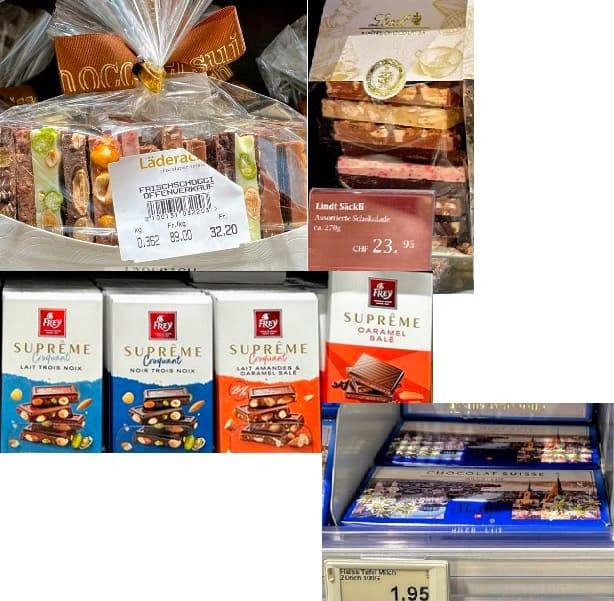 | Halba(Coop)Frey(Migros)|Laderach | 風景.當地人愛伴手禮.巧克力愛馬仕 | 1.95 |
| Cailler巧克力(Rayon蜂蜜牛軋糖) | 1819年老牌，Coop/Migros皆有 | 數CHF | |
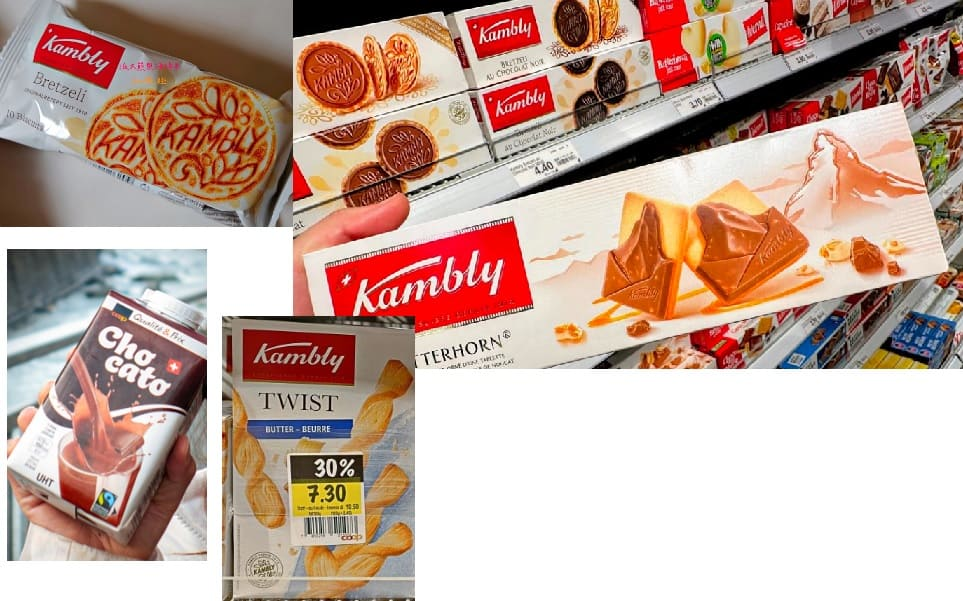 | Kambly餅乾Bretzeli檸檬味、Butterfly杏仁薄片、Mandelcaramel巧克力杏仁 | 馬特洪峰造型.機場也有 | 數CHF |
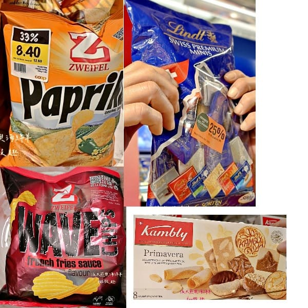 | Paprika紅甜椒.Poulet雞汁 | French Fries Sauce薯條沾醬味 | 數CHF |
| Rivella|Naturaplan無糖冰茶.C-ICE大麻冰茶.Volvic茶飲(自有品牌) | Vitamin Well維他命水(鎂).|Alpine Herbs無糖Ungesüsst|Schorle蘋果氣泡飲 | ~0.5 | |
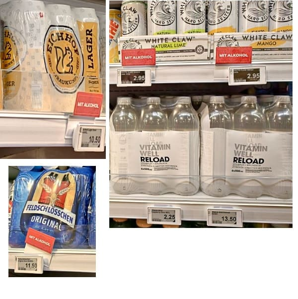 | 啤酒Feldschlösschen國民啤酒|Appenzeller|Eichho琉森 | White Claw酒精氣泡水 | ~0.5 |
| 出發站 | 原價 | 半價卡 / STP 折扣後 | 備註 |
|---|---|---|---|
| Interlaken Ost | CHF 175 | CHF 95（半價卡）｜CHF 95（STP） | 我們的出發站 |
| Grindelwald / Lauterbrunnen / Wengen | CHF 165 | CHF 85（半價卡/STP） | 若住格林德瓦或瀑布鎮 |
| Kleine Scheidegg / Eigergletscher | CHF 120 | CHF 60（半價卡/STP） | 較少旅客從此買 |
| 結論（我們：Interlaken Ost 出發） | CHF 175 | CHF 95（持半價卡） | vs 一般半價票CHF 103，省CHF 8 |
| 路段 | 全票 | 半價卡後 |
|---|---|---|
| Zermatt → Blauherd 來回（推薦） | CHF ~49 | CHF ~25 |
| Zermatt → Sunnegga 來回（只到第一站） | CHF ~26 | CHF ~13 |
| 路段 | 夏季全票 | 半價卡後 | 備註 |
|---|---|---|---|
| Zermatt ↔ Gornergrat 來回 | CHF 132 | CHF 66 | 含 ZOOOM 互動展，各站限進出各一次 |
| Priority Boarding（可選） | +CHF 7 | +CHF 7 | 提早3分登車 |
| 季節 | 全票（來回） | 半價卡後 | 備註 |
|---|---|---|---|
| 5–6月（肩季，6月適用） | CHF 183 | CHF 92 | 含 Glacier Palace 冰宮 |
| 7–8月（旺季） | CHF 207 | CHF 104 |
| 方案 | 費用 | 適合情況 |
|---|---|---|
| 早安票（Good Morning Ticket）+ 半價卡 | CHF 95 | 願意早起（07:04班），避開人潮，省CHF 8 |
| 一般半價票（普通搭乘） | CHF ~103 | 彈性出發，不限時間下山，輕鬆 |
| Swiss Travel Pass（STP）一般搭乘 | CHF ~168（75折） | STP在少女峰僅25折，比半價卡貴，不推薦 |
| 持 STP 買早安票 | CHF 95 | STP持有者買早安票也是CHF 95，與半價卡相同 |